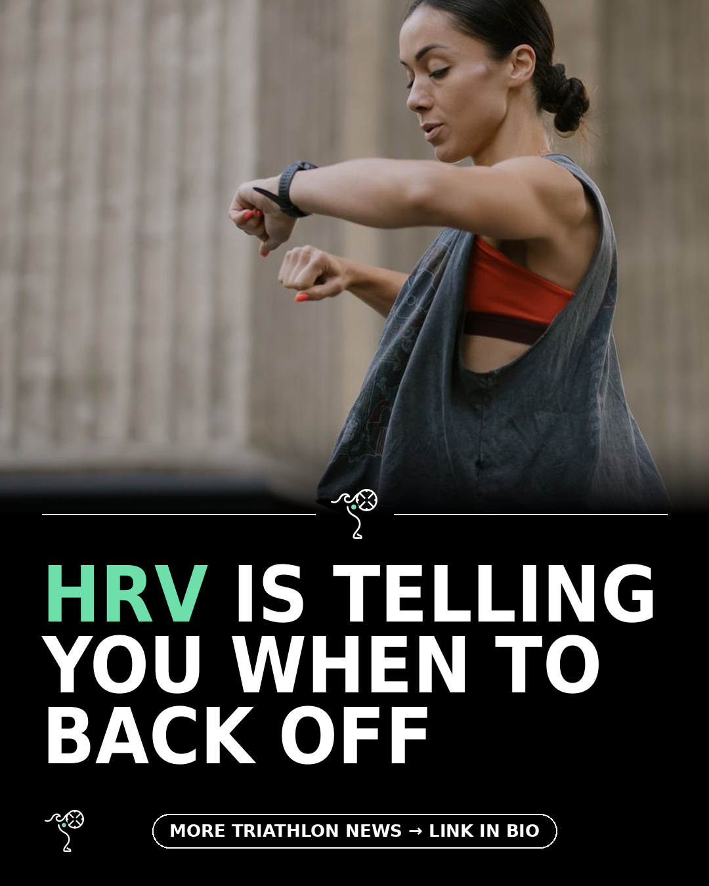

Triathlon News Daily
Wednesday, 14 October 2026 · generated automatically

Today's stories
- How heart rate variability can sharpen your training decisions220 Triathlon
- Why yoga might be the off-season work you keep skipping220 Triathlon
- Winter sunscreen is not optional for long rides and runsBlog - A Triathlete's Diary
- Eyeball Pretzel BitesMarathons & Motivation